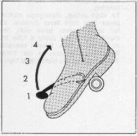
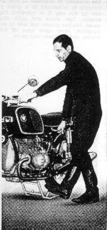

When engine is cold,
depress both carburetor ticklers 2 seconds longer
as the time at which petrol is coming out of the overflow bore
of the float bowl lower part (Models R 50/5 and R 60/5)
or open choke as far as possible,
never use intermediate position (Model R 75/5).
When engine is hot,
do not actuate ticklers or choke.
For starting, turn on ignition; red, green and orange
indicator lights must be on.
Depress starter button.
If you start manually depress kick starter briefly
and then kick through forcefully, only at warm engine
eventually turn on throttle slightly (max. 1/4 turn).
If engine (R 75/5) does not start when it is very hot,
put choke for short time on medium position, throttle closed.
At low outside temperatures,
crank engine with kick starter two or three times,
with ignition switched off;
actuate starter for no longer than 10 seconds to protect the battery.
A second attempt at starting which might become necessary
should be made only after a short pause of 20 to 30 seconds,
and it must not be of much longer duration than the first one.
A starter protection switch
prevents unintentional repeat starting while the engine is running;
This protection switch is actuated by the alternator.
Only if the engine RPM is sufficient for the alternator
to produce current will the starter lock.
Please avoid restarting the engine before it has stopped completely
so that no damage will be done to the teeth of the flywheel
or the starter pinion.
When the engine has started
and the idle speed increases,
the oil pressure indicator light (orange)
and the charging indicator light (red)
in the instrument cluster must go out.
If the oil pressure control lamp lights up
while driving, declutch immediately and
turn off the ignition.
If the engine oil level is adequate,
consult your BMW dealer.
If the charging indicator light stays on
during operation consult your BMW dealer.
This is an indication that your alternator
is not working,
and will ultimately result in a dead battery.
Letting the engine idle for extented periods
is harmful since this will cause the engine to overheat.
For Model R 75/5, switch off the choke latest when
engine starts faulty concentric running.
To start riding,
disengage clutch,
depress foot shift lever (neutral indicator lamp,
green, goes out), release clutch slowly
and apply a little throttle at the same time.
Proper operation of the clutch increases its life;
therefore, avoid popping the clutch in at high RPM.
To shift into second, third and fourth gear, declutch and simultaneously release the throttle, pull up foot shift lever once per gear, then let in clutch and apply throttle as needed. Figure 11
11 
To shift down
from fourth into third, second and first gear,
declutch and depress foot shift lever once per gear
and let in clutch.
To go to neutral
from fourth, third or second gear when the motorcycle
is standing still, disengage clutch and shift to
first by depressing the shift lever repeatedly
and then "pull up" the shift lever partially
(green neutral indicator lights up).
A tip:
Letting the clutch slip lightly facilitates down-shifting
while the motorcycle is standing still.
Figure 12
To park the motorcycle, push the center stand down with your right foot so that both roll-off brackets are on the ground. Put your full body weight on the foot pedal of the center stand and pull the motorcycle up and backwards by the lifting handle, keep your left hand on the handlebars to stabilize the motorcycle. Figure 13
13 